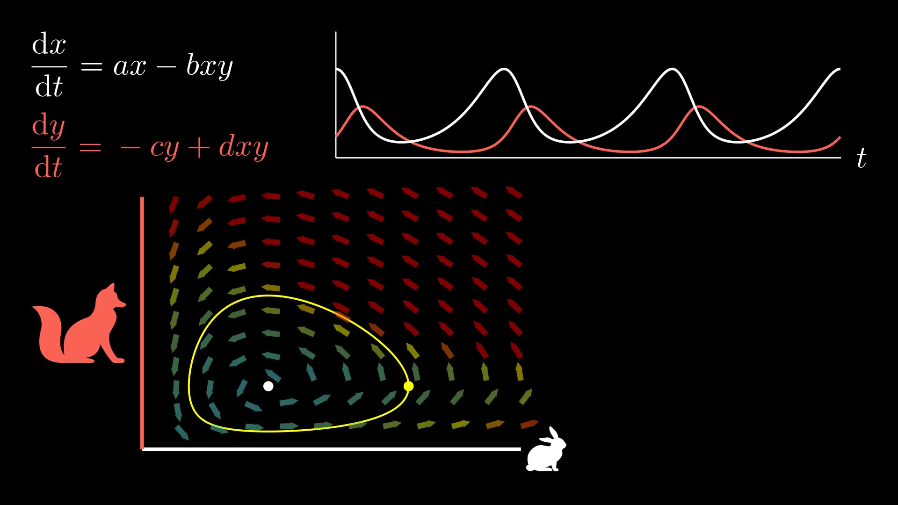

Dynamické modely populací
Contents
Dynamické modely populací#
from datetime import datetime
from babel.dates import format_datetime
now = datetime.now()
print ("Poslední změna dokumentu: ", format_datetime(now, locale='cs'))
Poslední změna dokumentu: 6. 1. 2023 14:46:15

Obr. 1 Lotkův-Volterrův model dvoudruhové populace dravce a kořisti byl v první polovině dvacátého století jedním z prvních počinů při snaze využít matematické modelování k objasnění přírodních fenoménů spojených s velikostmi populací živočichů.#
O předmětu#
Předmět je přednášen na oboru Myslivost. Obsahuje matematický aparát používaný v matematické biologii k popisu vývoje populací, jejich vzájemné interakce a schopnosti přežívat.
Budeme používat matematické postupy a zkoumat matematické modely, ale předmět není matematikou. Nemá tedy ambice všechny pojmy definovat přesným způsobem v matematice obvyklým. Přesné definice těchto pojmů je snadné najít v literatuře, například [6].
Co budeme dělat#
V předmětu si představíme základní metody modelování jevů a efektů známých z ekologie a populační biologie. Z těchto oblastí máme celou řadu poznatků.
Populace nerostou neomezeně, ale jenom do nosné kapacity prostředí (Verhulst, 1838).
Větší územní celky mají pestřejší druhové složení. (Mac Arthur, Wilson, 1967).
Malé populace mohou mít malou nebo zápornou rychlost růstu per capita (Allee, cca 1930–1940).
Věkově strukturovaná společenstva konvergují ke stabilní věkové skladbě (Leslie, 1945).
Při konkurenci dvou a více druhů dojde za určitých podmínek ke konkurenčnímu vyloučení některých druhů (Gause, 1934).
Ve fragmentovaném prostředí je nutno chránit i migrační trasy mezi fragmenty a také fragmenty, kde se daná populace nenachází (Levins, 1969).
V přírodě dochází k oscilacím, například ve společenstvech dravce a kořisti (Lotka, Volterra, 1920), u dlouhověkých cikád, při některých chemických reakcích (Bělousov, Žabotinski, 1951), při periodickém přemnožování obaleče v kanadských lesích (Ludwig, Jones, Holling, 1978).
Organismy produkují enzymy a bílkoviny a jejich fungování je závislé na rychlosti, s jakou dokáží syntetizovat potřebný enzym a na tom, jak dokáží udržet jeho stabilní hladinu. Výhodnější než jednoduchá konstantní produkce enzymu je, pokud si organismus vytvoří evolucí taktiku směřující ke zrychlení syntézy a zvýšení robustnosti stacionárního stavu, tj. zvýšení odolnosti proti narušení rovnováhy (viz [2]).
Ukážeme si, že uvedené efekty nejsou ničím jiným, než nevyhnutelným důsledkem principů, podle kterých funguje dané společenství. Matematickým modelováním převedeme představy o vztazích v populacích na pozorovatelná data. Zpravidla budeme sledovat velikost populace a její vývoj v čase.
Pokud matematický model vykazuje shodu s pozorovanou skutečností, máme všechny důvody domnívat se, že naše představy o principech fungování společenství jsou správné a to nám umožní sledovat, jak se situace bude měnit při změně parametrů jako jsou změna prostředí nebo lov či sběr členů této populace. Matematika umožní levné, snadné, etické a bezpečné experimenty s danou populací.
O metodách výuky#
Cvičení jsou z výpočetního hlediska zaměřeny na využití jazyka Python. To je moderní a perspektivní skriptovací jazyk, vhodný pro manipulaci s daty a přístupný i neprogramátorům.
Díky Pythonu zpřístupníme možnosti řešení matematických modelů i nematematikům. Vyhneme se obtížným výpočtům, kvůli kterým bychom se museli naučit používat netriviální matematický aparát, jako jsou derivace a integrály.
Nebojte se, nebudete programovat. Měli byste pasivně rozumět kódu z přednášek a cvičení a umět jej přizpůsobit jinému modelu nebo jiné situaci.
Příklady pro cvičení jsou zápisníky prostředí Jupyter, ve kterém Python budeme spouštět. Je možné otevřít v online prostředí nebo na svém lokálním PC. Online možnosti jsou přístupné přes horní lištu pod ikonkou rakety.
JupyterHub je volba, kterou budeme používat během cvičení. Touto volbou se vám naklonují materiály do vlastního adresáře a budete moci s touto jejich kopií pracovat. Co se přesně stane a jaké jsou možnosti je popsáno v dokumentaci k nbgitpuller. Budete pracovat na serveru univerzity, abychom měli všichni stejné prostředí. Zde se také bude pracovat na zápočtovém projektu. Účet na jupyter.mendelu.cz mají studenti předmětu. Login je stejný jako do UIS (například
xnovak65), přednastavené heslo máte v UIS, návod jak heslo najít je na přihlašovací stránce JupyterHubu.Binder založí dočasně server na službě mybinder.org a umožní Vám experimentovat s kódem, spouštět příkazy. Práce je dočasná, pokud po ukončení nechcete o práci přijít, musíte si zápisník stáhnout na lokální PC. Je možné doinstalovat balíčky, například knihovnu intersect příkazem
! pip install intersect(vykřičník na začátku informuje o tom, že se jedná o příkaz operačního systému a ne příkaz jazyka Python).Colab vám po přihlášení ke Google účtu uloží zápisník na Google disk. Prostředí je trochu jiné, ale práce je zpravidla svižnější na odezvu. Zápisník se ukládá a je možné sledovat změny a ukládat verze. Výsledek práce je možno uložit na GitHub do svého repozitáře nebo jako Gist. Je možné doinstalovat chybějící balíčky stejně jako v předchozím bodě pro Binder.
Live Code umožní spouštět příklady přímo na stránce, kterou čtete. Volba je nejméně svižná, ale použitelná.
Offline práce je možná, pokud máte nainstalovaný Python, Jupyter a s tím spojený ekosystém. Doporučenou volbou pro nejběžnější operační systémy (Linux, Windows) je Anaconda a jako editor buď Jupyter zápisník v prohlížeči nebo editor Visual Studio Code a pluginy Python, Pylance, Python for VSCode, Jupyter.
Přednášky jsou psány jazykem MyST a je možné je otevřít v online prostředí, které tento jazyk podporuje. To je v zimě 2022 částečně Binder a JupyterHub z online služeb a Jupyter Notebook jako offline volba. (Nejsou renderovány definice, věty a některá další prostředí, ty se zobrazují jako programový kód.) Vývoj však jde rychle dopředu…
Varování
Pokud pracujete na lokálním počítači, máte data pod kontrolou a nikdo jiný je nevidí. Při práci na JupyterHubu na Mendelově univerzitě data může vidět i admin serveru. (Toho budeme využívat při práci na zápočtovém projektu.) Při práci na serverech jako Colab či Binder jdou data přes servery dalších vlastníků a nemáte data plně pod kontrolou. Proto není vhodné pracovat s osobními daty a citlivým obsahem.